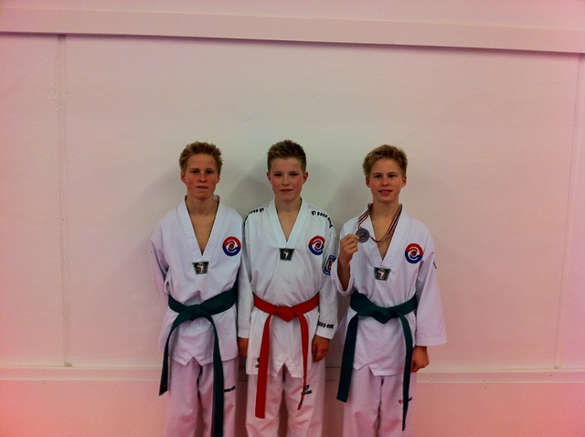

Innlegg
Ett Sølv i NC IV

I Helgen var det arrangert årets siste Norges Cup og Ringerike TKD-klubb Stilte med tre utøvere.
Deltakerne fra vår klubb var:
Mikkel Tiller i klassen gutter junior -55 kilo
Aleksander Kvannli i klassen gutter ungdom -49 kilo
Kristoffer Kvannli (sølv) i klassen gutter ungdom -49 kilo
Stevnet ble denne gangen avholdt i Nannestadhallen i Nannestad og det ble satt rekord i antall påmeldte.
Kristoffer og Aleksander gikk sine kamper på lørdagen i en gruppe med 10 utøvere totalt. Alle kampene de gikk var svært spennende og det ble avgjort i de siste 10 sekundene i omtrent samttlige av deres kamper. Aleksander røk desverre ut i kamp nummer to, ved at han var uheldig og sparket litt for høyt. I ungdomsklassene er det ikke lov å sparke mot hodet, kun mot vesten, og Aleksander ble diskvalifisert.
Kristoffer kom seg helt til finalen og hadde lenge ledelsen, men fikk advarsler og minuspoeng på grunn av for harde spark, ledelsen ble derfor tatt igjen og motstanderen fikk inn noen kjappe poeng mot slutten av kampen og vant, det ble derfor sølv til Kristoffer.
Neste år blir gutta 14 år og blir da flyttet til "junior" klassen, hvor de tillater både hodespark og noe hardere treff i vesten.
På søndag var det Mikkels tur. Han tapte desverre sin første kamp, og var da ute. Motstanderen var ett hakk mer rutinert denne gangen.
Dette var siste Norges Cup for i år og vi skal trene hardt til neste års konkurranser, i tillegg til den ordinære treningen og håper å kunne stille med enda flere til konkurranser i 2011